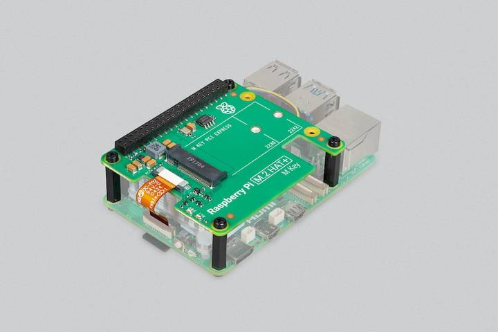
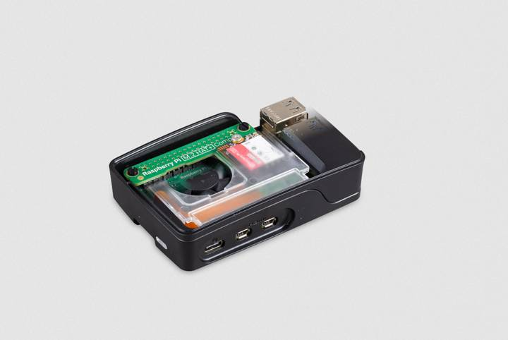

M.2 HAT overview

Figure 1. The M.2 HAT+

Figure 2. The M.2 HAT+ Compact in the Case
The M.2 HAT+ M Key and M.2 HAT+ Compact M Key enable you to connect M.2 peripherals such as NVMe drives and other PCIe accessories to 5's PCIe interface. The full terms are at https://www.example.com/terms.
The M.2 HAT+ and M.2 HAT+ Compact adapter boards convert between the PCIe connector on 5 and a single M.2 M key edge connector. The M.2 HAT+ supports any device that uses the 2230 or 2242 form factor; the M.2 HAT+ Compact supports any device that uses the 2230 form factor.
The M.2 HAT+ is available in standard and Compact forms, each serving different use cases.
- The M.2 HAT+ includes threaded spacers that provide ample room to fit the Active Cooler beneath it. However, it's only compatible with the Case for 5 if you remove the lid and the included fan.
- The M.2 HAT+ Compact is designed to fit around the included fan in the Case for 5. However, you can't fit the Active Cooler beneath it.
Both the M.2 HAT+ and M.2 HAT+ Compact conform to the HAT+ specification, which allows OS to automatically detect the HAT+ and any connected devices!